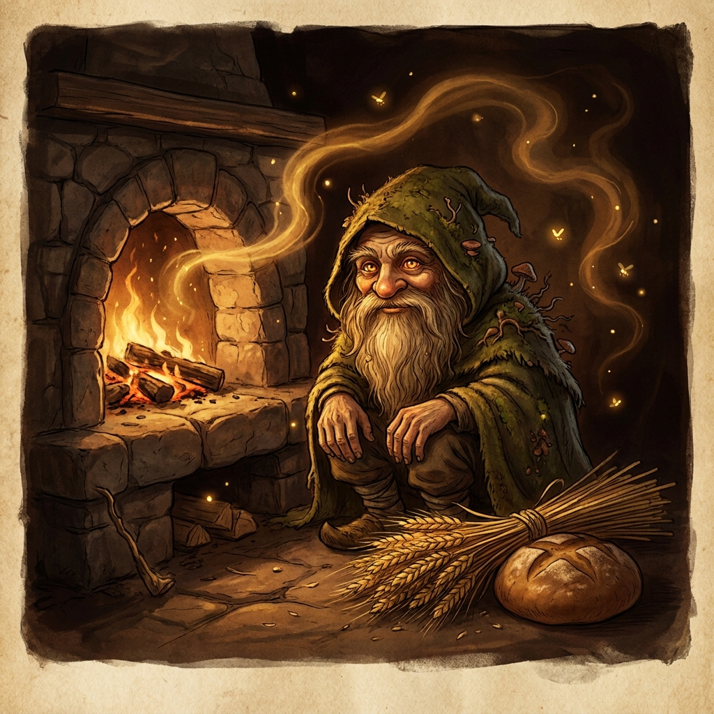

● WEEKLY ANOMALY EVENT4D 18H REMAINING
The Shadow Week
+40% Umbra entity resonance in shaded & woodland biomes.
COMMUNITY ANOMALY PURGE6,842 / 10,000 FOUND
FIELD GUIDE // FIRST CONTACT
WELCOME BACK. WHAT ELSE IS HIDING NEARBY?
READY WHEN YOU ARE
Live GPS bearing and distance

TARGET EST.+40% Umbra entity resonance in shaded & woodland biomes.
DISCOVERED BY Explorer // 25 TIMESTAMP 18:42:09 UTC+1
GEOLOCATION LOG ◉ Brentwood Oak Grove (Sector 09)
☼ Dusk • 16°C ⚑ Traveled: 1.8 km
“A shy keeper of the hearth, wrapped in moss and old firelight. Earn its trust, and the little wisp may grow into a guardian worthy of the oldest homes.”
Hearth Wisp · Stage I